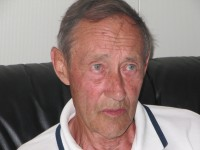

Svein Brasø
M, #1135, f. 27 januar 1971, d. 13 september 2010
Foreldre
Familie: Jeanette Wahl (f. 1 januar 1972)
| Sønn | Benjamin Brasø+ (f. 13 juni 1997) |
| Datter | Pia Aurora Brasø (f. 12 september 1999) |
Biografi
Svein Brasø ble født den 27 januar 1971 på/i Rørvik, Vikna, Nord-Trøndelag. Han døde den 13 september 2010 på/i Vikna, Nord-Trøndelag. Svein dro ut med sjarken sin for å dra krabbeteiner sør i Nærøysundet. Noe senere ble sjarken funnet tom og det ble umiddelbart iverksatt leteaksjon. Han ble funnet på omkring 20 meters dyp i området sørvest for Felandsholmen. Funnet ble gjort ved hjelp av en kamerautstyrt miniubåt. Han ble gravlagt den 21 september 2010 på/i Lundring kirke, Nærøy, Nord-Trøndelag
+.
Svein Brasø ble jordfestet den 21 september 2010 Østre gravlund, Rørvik, Vikna, Nord-Trøndelag.
| Sist redigert |
16 juli 2022 17:29:42 |
Leonard Olav Bygstad
M, #1137, f. 26 april 1913, d. 21 mars 1988
Familie: Hjørdis Sofia Buanes (f. 4 november 1910, d. 27 mars 2007)
| Sønn | Oddvin Bygstad (f. 17 januar 1944) |
| Datter | Margit Bygstad (f. 27 november 1945, d. 24 november 1999) |
| Datter | Oddbjørg Bygstad (f. 28 april 1948) |
| Datter | Eldrid Bygstad+ (f. 6 juli 1951) |
| Sønn | Einar Bygstad (f. 3 august 1953, d. 12 januar 2015) |
Biografi
Leonard Olav Bygstad ble født den 26 april 1913 på/i Bygstad, Gaular, Sogn og Fjordane. Han giftet seg med
Hjørdis Sofia Buanes. Han døde den 21 mars 1988 på/i Buanes, Naustdal, Sogn og Fjordane. Han ble gravlagt den 26 mars 1988 på/i Naustdal kirkegård, Naustdal, Sogn og Fjordane.
| Sist redigert |
30 september 2010 00:00:00 |
Hjørdis Sofia Buanes
K, #1138, f. 4 november 1910, d. 27 mars 2007
Familie: Leonard Olav Bygstad (f. 26 april 1913, d. 21 mars 1988)
| Sønn | Oddvin Bygstad (f. 17 januar 1944) |
| Datter | Margit Bygstad (f. 27 november 1945, d. 24 november 1999) |
| Datter | Oddbjørg Bygstad (f. 28 april 1948) |
| Datter | Eldrid Bygstad+ (f. 6 juli 1951) |
| Sønn | Einar Bygstad (f. 3 august 1953, d. 12 januar 2015) |
Biografi
Hjørdis Sofia Buanes ble født den 4 november 1910 på/i Naustdal, Sogn og Fjordane. Hun giftet seg med
Leonard Olav Bygstad. Hun døde den 27 mars 2007 på/i Naustdal sykeheim, Naustdal, Sogn og Fjordane. Hun ble gravlagt den 3 april 2007 på/i Naustdal kirkegård, Naustdal, Sogn og Fjordane.
Hjørdis Sofia Buanes was also known as Hjørdis Sofia Bygstad.
| Sist redigert |
30 september 2010 00:00:00 |
Margit Bygstad
K, #1140, f. 27 november 1945, d. 24 november 1999
Foreldre
Biografi
Margit Bygstad ble født den 27 november 1945 på/i Bygstad, Gaular, Sogn og Fjordane. Hun døde den 24 november 1999 på/i Førde, Sogn og Fjordane.
| Sist redigert |
30 september 2010 00:00:00 |
Sirianna Pedersdatter Rørdal
K, #1142, f. 13 mai 1808, d. 15 desember 1874
Foreldre
Biografi
Sirianna Pedersdatter Rørdal ble født den 13 mai 1808 på/i Kolvereid, Nærøy, Nord-Trøndelag. Hun giftet seg med
Kornelius Hanssen den 2 november 1837. Hun døde den 15 desember 1874 på/i Nærøy, Nord-Trøndelag.
Sirianna Pedersdatter Rørdal was also known as Sirianna Hanssen.
| Sist redigert |
30 september 2010 00:00:00 |
| Slektskap | 7-menning 4 ganger forskjøvet til Håkon Wahl |
Einar Bygstad
M, #1143, f. 3 august 1953, d. 12 januar 2015
Foreldre
Biografi
Einar Bygstad ble født den 3 august 1953 på/i Naustdal, Sogn og Fjordane. Han døde den 12 januar 2015.
Einar Bygstad hadde. Downs syndrom.
| Sist redigert |
28 september 2022 09:42:11 |
Per Bjørnar Digre
M, #1146, f. 23 september 1936, d. 26 juni 2025
Familie: Maret Hugås (f. 5 juni 1924, d. 8 juni 1989)
| Sønn | Ingvar Digre+ (f. 8 mai 1961) |
| Datter | Ingeborg Digre+ (f. 20 november 1962) |

Per Bjørnar Digre
Biografi
Per Bjørnar Digre ble født den 23 september 1936 på/i Singsås, Midtre Gauldal, Sør-Trøndelag. Han giftet seg med
Maret Hugås den 31 desember 1959. Han døde den 26 juni 2025 på/i Midtre Gauldal sykehjem, Støren, Midtre Gauldal, Sør-Trøndelag. Han ble gravlagt den 4 juli 2025 på/i Singsås kirkegård, Midtre Gauldal, Trøndelag.
| Sist redigert |
4 juli 2025 07:44:33 |
Maret Hugås
K, #1147, f. 5 juni 1924, d. 8 juni 1989
Familie: Per Bjørnar Digre (f. 23 september 1936, d. 26 juni 2025)
| Sønn | Ingvar Digre+ (f. 8 mai 1961) |
| Datter | Ingeborg Digre+ (f. 20 november 1962) |
Biografi
Maret Hugås ble født den 5 juni 1924 på/i Singsås, Midtre Gauldal, Sør-Trøndelag. Hun giftet seg med
Per Bjørnar Digre den 31 desember 1959. Hun døde den 8 juni 1989 på/i Støren, Midtre Gauldal, Sør-Trøndelag. Hun ble gravlagt på/i Singsås kirkegård, Midtre Gauldal, Sør-Trøndelag.
Maret Hugås was also known as Maret Digre.
| Sist redigert |
30 september 2010 00:00:00 |
{kind=link}